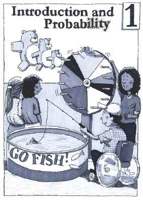

Chapter 1
Introduction and Probability
All supplied Chapter 1 lessons are ready.
Lessons
- 1 OpeningChapter 1 OpeningFuture unit
- 1.1.1Finding Shared and Unique CharacteristicsAvailable
- 1.1.2Analyzing a GameAvailable
- 1.1.3Finding UnknownsAvailable
- 1.1.4Investigating a Proportional RelationshipAvailable
- 1.1.5Investigating Number PatternsAvailable
- 1.2.1Introduction to ProbabilityAvailable
- 1.2.2Investigating ProbabilityAvailable
- 1.2.3Modifying the Sample SpaceAvailable
- 1.2.4Expressing Fractions as PercentsAvailable
- 1.2.5Rewriting FractionsAvailable
- 1.2.6Fraction AdditionAvailable
- 1.2.7Compound ProbabilityAvailable
- 1.2.8Subtracting ProbabilitiesAvailable
- 1 ClosureChapter 1 ClosureAvailable